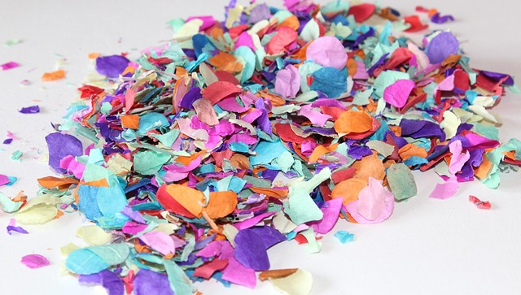
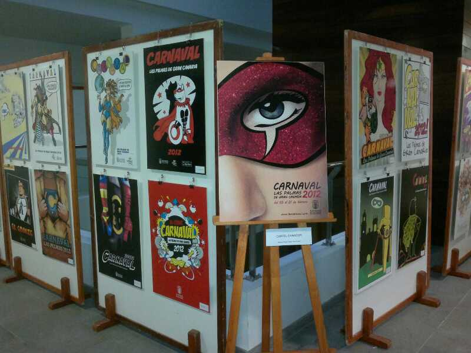
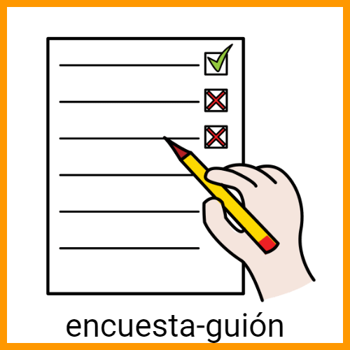
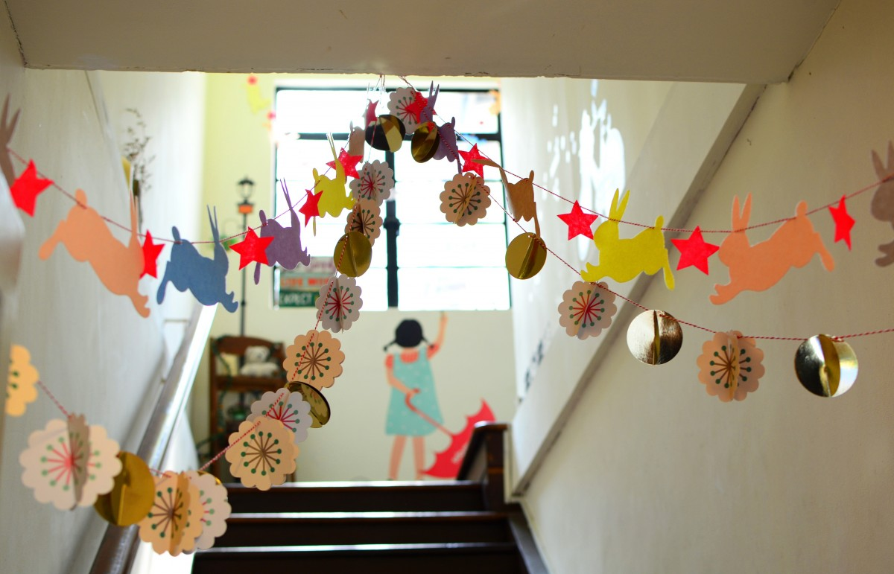

Diccionario
Confeti
Definición:
Pedacitos de papel con formas y colores variados que se lanzan las personas unas a otras a puñados en fiestas y celebraciones.
Ejemplo:
Hemos preparado confeti para la fiesta de disfraces.
Conocimientos
Definición:
Informaciones y hechos aprendidos por alguien.
Ejemplo:
No tengo conocimientos para resolver el problema.
Elaborar
Definición:
Hacer o producir algo.
Ejemplo:
Vamos a elaborar una tarta de chocolate.
Exposición
Definición:
Conjunto de cosas que se colocan para ser vistas, como creaciones, productos, etc.
Ejemplo:
Fuimos a una exposición de juguetes antiguos.
Guión
Definición:
Actividad o trabajo.
Ejemplo:
Luisa preparó el guión de su discurso.
Guirnalda
Definición:
Corona o tira de flores, hierbas, ramos y otros materiales entretejidos.
Ejemplo:
Pondremos unas guirnaldas decorando la casa por Navidad.
 Ya sabes cómo me gustan las tartas, tienes todos los
Ya sabes cómo me gustan las tartas, tienes todos los